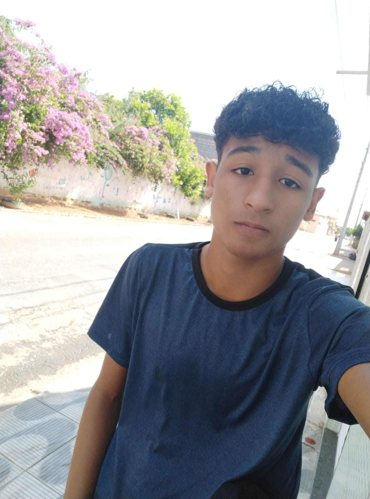

Cézar Ricardo Santos Passos
cezarspmoc99@gmail.com
+55(38)984233619
Minicurrículo
Estou apenas no início de minha carreira, por isso busco oportunidades para que possa desenvolver e ampliar minhas habilidades, talentos e conhecimentos, além de minha inserção no mercado de trabalho. Terei em mente que devo compensar minha falta de experiência com o máximo de empenho, dedicação e estudo.
Formação Escolar
IFNMG, Montes Claros — Nível Médio/Técnico
MAIO DE 2021 - AINDA EM CURSO
Previsão de encerramento: 05/12/2023
Atualmente cursando o ensino médio juntamente ao técnico em
informática
Turno: Integral
Habilidades | Soft Skills
Teste de Personalidade
Segundo o teste de personalidades da "NERIS
Analytics Limited", possuo a personalidade "Comandante".
Resultados:
| Aspecto | % | ||
|---|---|---|---|
| Extrovertido/Introvertido | 63/37 | ||
| Intuitivo/Observador | 69/31 | ||
| Pensante/Sentimento | 51/49 | ||
| Julgador/Explorador | 54/46 | ||
| Assertivo/Cauteloso | 53/47 |